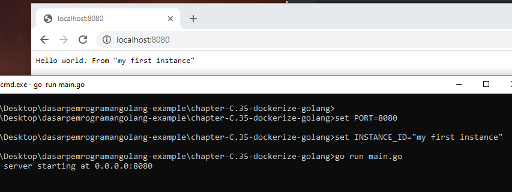

C.35. Dockerize Aplikasi Golang
Pada chapter ini kita akan praktek men-dockerize aplikasi Go, membungkus aplikasi hello world sebagai docker image untuk kemudian di jalankan sebagai container.
Kita tidak akan membahas docker secara detail ya, hanya pengenalannya saja. Untuk teman-teman yang tertarik belajar docker secara komprehensif mulai dari awal, hingga masuk ke docker compose kemudian kubernetes from zero to hero, bisa enroll course Udemy Praktis Belajar Docker dan Kubernetes untuk Pemula berikut.

C.35.1. Prerequisities
Pastikan Docker Engine ter-install untuk pengguna Windows atau MacOS. Untuk pengguna Linux/Unix, install saja Docker Engine. Silakan merujuk ke laman panduan instalasi https://docs.docker.com/get-docker/ jika belum meng-install Docker-nya.
C.35.2. Istilah Dalam Docker
• Container
Container adalah sebuah environment ter-isolasi, merupakan bentuk virtualisasi yang lebih kecil dan ringan dibanding VM (Virtual Machine). Virtualisasi pada container disebut dengan Containerization.
• Docker Container
Docker container adalah sebuah container yang di-manage oleh Docker Engine.
• Docker Engine
Docker engine merupakan daemon yang bertugas untuk manajemen container-container.
• Docker Image
Docker Image adalah sebuah file yang di-generate oleh docker, yang file tersebut nantinya digunakan untuk basis pembuatan dan eksekusi container.
• Containerize dan Dockerize
Containerize merupakan istilah terhadap aplikasi yang di-build ke bentuk Image. Sedangkan Dockerize merupakan istilah untuk containerize menggunakan Docker. Perlu diketahui bahwa penyedia container tidak hanya Docker saja, ada banyak engine container lainnya yang bisa dipergunakan.
C.35.3. Pembuatan Aplikasi Hello World
Sebelum masuk ke aspek docker, mari kita siapkan dulu aplikasi web sederhana yang nantinya akan di-build ke bentuk Image. O iya, jangan lupa inisialisasi projeknya ya menggunakan perintah go mod init hello-world.
Siapkan folder project baru dengan isi file main.go. Tulis kode berikut.
package main
import (
"log"
"net/http"
"os"
)
func main() {
// ...
}
Dalam fungsi main, tambahkan statement untuk ambil informasi port dari env var PORT, dan informasi id instance dari env var INSTANCE_ID. Kedua variabel ini akan dipergunakan dalam web server yang akan kita buat.
- env var
PORTdigunakan sebagai port web server. - env var
INSTANCE_IDuntuk instance identifier, hanya sebagai info saja dan variabel ini opsional.
port := os.Getenv("PORT")
if port == "" {
log.Fatal("PORT env is required")
}
instanceID := os.Getenv("INSTANCE_ID")
Selanjutnya siapkan satu buah multiplexor dengan isi satu buah route GET /, yang handler-nya mengembalikan sebuah pesan teks Hello world. Jika env var INSTANCE_ID di set, maka akan ditampilkan isinya sebagai bagian dari respon handler ini.
mux := http.NewServeMux()
mux.HandleFunc("/", func(w http.ResponseWriter, r *http.Request) {
if r.Method != "GET" {
http.Error(w, "http method not allowed", http.StatusBadRequest)
return
}
text := "Hello world"
if instanceID != "" {
text = text + ". From " + instanceID
}
w.Write([]byte(text))
})
Lanjut siapkan objek http.Server-nya, gunakan objek mux yang sudah dibuat sebagai basis handler web server, kemudian start web server-nya.
server := new(http.Server)
server.Handler = mux
server.Addr = "0.0.0.0:" + port
log.Println("server starting at", server.Addr)
err := server.ListenAndServe()
if err != nil {
log.Fatal(err.Error())
}
C.35.4. Testing Aplikasi Hello World
Kita akan coba test aplikasi hello world yang baru dibuat. Untuk Windows gunakan command berikut.
set PORT=8080
set INSTANCE_ID="my first instance"
go run main.go
Untuk sistem operasi non-Windows, gunakan:
export PORT=8080
export INSTANCE_ID="my first instance"
go run main.go

Ok bisa dilihat aplikasi berjalan sesuai harapan. Selanjutnya kita akan dockerize aplikasi hello world ini.
C.35.5. Pembuatan Dockerfile
Aplikasi hello world yang sudah dibuat akan kita build ke bentuk Docker Image untuk kemudian di-run sebagai container. Nah untuk pembuatan Image, salah satu syaratnya adalah mempersiapkan Dockerfile.
Jadi sekarang buat file baru bernama Dockerfile, lalu isi dengan kode berikut.
FROM golang:alpine
RUN apk update && apk add --no-cache git
WORKDIR /app
COPY . .
RUN go mod tidy
RUN go build -o binary
ENTRYPOINT ["/app/binary"]
Berikut adalah penjelasan per baris dari kode di atas.
1. Statement FROM golang:alpine
Keyword FROM ini digunakan untuk inisialisasi build stage dan juga menentukan basis Image yang digunakan. Informasi golang:alpine disini adalah basis image yang dimaksud, yaitu image bernama golang dengan tag bernama alpine yang tersedia di laman officila Docker Hub Golang https://hub.docker.com/_/golang.
Dalam Image golang:alpine sudah tersedia beberapa utilitas untuk keperluan build aplikasi Golang. Image golang:alpine basisnya adalah Alpine OS.
2. Statement RUN apk update && apk add --no-cache git
Keyword RUN digunakan untuk menjalankan shell comamnd. Argument setelahnya, yaitu apk update && apk add --no-cache git akan dijalankan di Image golang:alpine yang sudah di-set sebelumnya. Command tersebut merupakan command Alpine OS yang kurang lebih gunanya adalah berikut:
- Command
apk updatedigunakan untuk meng-update index packages pada OS. - Command
apk add --no-cache gitdigunakan untuk meng-install Git. Kebetulan pada basis imagegolang:alpineby default Git adalah tidak tersedia. Jadi harus di-install terlebih dahulu. Git ini nantinya digunakan sewaktugo getdependensi lewat commandgo mod tidy. Meskipun pada contoh aplikasi hello world tidak menggunakan dependensi eksternal, install saja tidak apa.
3. Statement WORKDIR /app
Digunakan untuk menentukan working directory yang pada konteks ini adalah /app. Statement ini menjadikan semua statement RUN di bawahnya akan dieksekusi pada working directory.
4. Statement COPY . .
Digunakan untuk meng-copy file pada argument pertama yaitu . yang merepresentasikan direktori yang aktif pada host atau komputer kita (yang isinya file main.go, go.mod, dan Dockerfile), untuk kemudian di-paste ke dalam Image ke working directory yaitu /app.
Dengan ini isi /app adalah sama persis seperti isi folder project hello world.
5. Statement RUN go mod tidy
Digunakan untuk validasi dependensi, dan meng-automatisasi proses download jika dependensi yang ditemukan belum ter-download. Command ini akan mengeksekusi go get jika butuh untuk unduh dependensi, makanya kita perlu install Git.
6. Statement RUN go build -o binary
Command go build digunakan untuk build binary atau executable dari kode program Go. Dengan ini source code dalam working directory akan di-build ke executable dengan nama binary.
7. Statement ENTRYPOINT ["/app/binary"]
Statement ini digunakan untuk menentukan entrypoint container sewaktu dijalankan. Jadi khusus statement ENTRYPOINT ini pada contoh di atas adalah yang efeknya baru kelihatan ketika Image di-run ke container. Sewaktu proses build aplikasi ke Image maka efeknya belum terlihat.
Dengan statement tersebut nantinya sewaktu container jalan, maka executable binary yang merupakan aplikasi hello world kita, itu dijalankan di container sebagai entrypoint.
Ok, file Dockerfile sudah siap, mari kita lanjut ke proses build dan start container.
C.35.6. Build Image dan Create Container
• Build Image
Pertama masuk ke direktori folder projek, lalu jalankan command docker build berikut.
cd folder-projek
docker build -t my-image-hello-world .
Command di atas akan melakukan proses build Image pada file yang ada di dalam . yang merupakan isi folder projek. Projek akan di-build ke sebuah Image dengan nama adalah my-image-hello-world. Flag -t digunakan untuk menentukan nama Image.
Kurang lebih outputnya seperti gambar berikut. O iya gunakan command docker images untuk menampilkan list semua image yang ada di lokal.

• Create Container
Image sudah siap, sekarang mari kita buat container baru menggunakan basis image my-image-hello-world. Command-nya kurang lebih berikut:
docker container create --name my-container-hello-world -e PORT=8080 -e INSTANCE_ID="my first instance" -p 8080:8080 my-image-hello-world
Command di atas akan menjalankan sebuah proses yang isinya kurang lebih berikut:
- Buat container baru dengan nama
my-container-hello-world. - Flag
--namedigunakan untuk menentukan nama container. - Sewaktu pembuatan container, env var
PORTdi-set dengan nilai adalah8080. - env var
INSTANCE_IDjuga di set di-set, nilai adalah teksmy first instance. - Flag
-edigunakan untuk menge-set env var. Flag ini bisa dituliskan banyak kali sesuai kebutuhan. - Kemudian port
8080yang ada di luar network docker (yaitu di host/laptop/komputer kita) di map ke port8080yang ada di dalam container. - Flag
-pdigunakan untuk mapping port antara host dan container. Bagian ini biasa disebut dengan expose port. - Proses pembuatan container dilakukan dengan Image
my-image-hello-worlddigunakan sebagai basis image.
Semoga cukup jelas penjabaran di atas. Setelah container berhasil dibuat, cek menggunakan command docker container ls -a untuk menampilkan list semua container baik yang sedang running maupun tidak.

• Start Container
Ok, sekarang container juga sudah dibuat, lanjut untuk start container tersebut, caranya menggunakan command docker container start. Jika sudah, coba cek di browser aplikasi web hello world, harusnya sudah bisa diakses.
docker container start my-container-hello-world
docker container ls

Bisa dilihat, sekarang aplikasi web hello world sudah bisa diakses dari host/komputer yang aplikasi tersebut running dalam container docker.
Jika mengalami error saat start container, bisa jadi karena port 8080 sudak dialokasikan untuk proses lain. Solusi untuk kasus ini adalah kill saja proses yang menggunakan port tersebut, atau rebuild image dan create container ulang tapi menggunakan port lainnya, selain 8080.
O iya, pada image di atas juga bisa dilihat penggunaan command docker container ls untuk memunculkan list container yang sedand running atau aktif. Untuk menampilkan semua container (aktif maupun non-aktif), cukup dengan menambahkan flag -a atau --all.
• Stop Container
Untuk stop container bisa dengan command docker container stop <nama-container-atau-container-id>.
docker container stop my-container-hello-world
docker container ls
• Hapus Container
Untuk hapus container bisa dengan command docker container rm <nama-container-atau-container-id>.
docker container rm my-container-hello-world
docker container ls
• Hapus Image
Untuk hapus image bisa dengan command docker image rm <nama-image-atau-image-id>. O iya, untuk penghapusan image, harus dipastikan terlebih dahulu tidak ada container yang running menggunakan basis image yang ingin dihapus.
docker image rm my-image-hello-world
docker images
C.35.7. Run Container
Untuk run container sebenarnya ada dua cara ya, yang pertama seperti contoh di atas dengan membuat container nya terlebih dahulu menggunakan command docker container create kemudian di start menggunakan command docker container start.
Atau bisa juga menggunakan command docker run. Command ini akan membuat container baru kemudian otomatis menjalankannya. Tapi saya sampaikan bahwa lewat cara ini tidak ada pengecekan apakah container sudah dibuat atau tidak sebelumnya, pasti akan dibuat container baru.
Mungkin perbandingannya seperti ini:
• Jalankan container lewat create lalu start
docker container create --name my-container-hello-world -e PORT=8080 -e INSTANCE_ID="my first instance" -p 8080:8080 my-image-hello-world
docker container start my-container-hello-world
• Jalankan container lewat run
docker container run --name my-container-hello-world -e PORT=8080 -e INSTANCE_ID="my first instance" -p 8080:8080 my-image-hello-world
Bisa dilihat bukan bedanya, hanya sedikit.
O iya, khusus untuk command docker run biasanya dijalankan dengan tambahan beberapa flag agar lebih mudah kontrol-nya, yaitu ditambahkan flag --rm dan -it.
docker container run --name my-container-hello-world --rm -it -e PORT=8080 -e INSTANCE_ID="my first instance" -p 8080:8080 my-image-hello-world
• Flag --rm
Flag ini digunakan untuk meng-automatisasi proses penghapusan container sewaktu container tersebut di stop. Jadi kita tidak perlu delete manual pakai docker container rm. Hal ini sangat membantu karena command docker run akan membuat container baru setiap dijalankan. Tapi sebenarnya pada contoh sebelumnya kita tidak perlu khawatir akan dibuat container baru karena sudah ada flag --name. Flag tersebut digunakan untuk menentukan nama container, yang dimana nama container harus unik. Jadi kalau ada duplikasi pasti langsung error. Nah dari sini berarti kalau temen-temen tidak pakai --name sangat dianjurkan paka --rm dalam penerapan docker run.
• Flag -it
Flag ini merupakan flag gabungan antara -i yang digunakan untuk meng-enable interactive mode dan -t untuk enable TTY. Dengan ini kita bisa masuk ke mode interaktif yang dimana jika kita terminate atau kill command menggunakan CTRL + C atau CMD + C (untuk mac), maka otomatis container akan di stop.
Nah dengan menggabungkan flag --rm dan flag -it kita bisa dengan mudah stop kemudian hapus container.
Selain itu ada juga flag yang mungkin penting yaitu -d atau dettach. Flag ini bisa digabung dengan -it. Dettach adalah mode dimana ketika command docker run dijalankan, command akan langsung selesai. Dari sini untuk stop container berarti harus menggunakan command docker stop. Contoh:
docker container run --name my-container-hello-world --rm -itd -e PORT=8080 -e INSTANCE_ID="my first instance" -p 8080:8080 my-image-hello-world
docker container stop my-container-hello-world